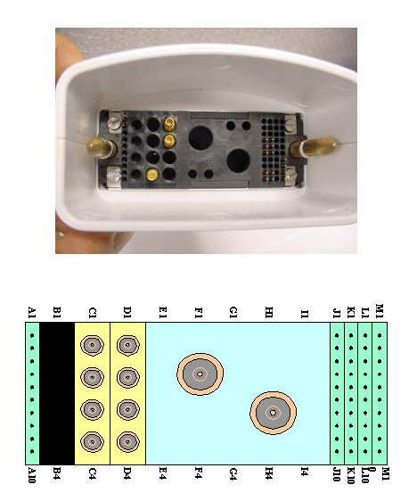
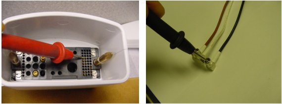

- 00000018WIA30D12F20GYZ
- id_131075793.0
- Aug 29, 2019 1:54:49 AM
1.5 HD 3Ch Shoulder Coil Troubleshooting Tips
Overview
The following tips can be used to troubleshoot common problems with the HD 3CH Shoulder Coil by GE-USAI.
Tools and Test Equipment
Digital Voltmeter
Some tests may require Phantoms for IQ Testing.
Required Conditions
The HD 1.5T 3CH shoulder coil must be installed in the system.
Procedure
Coil Fault or Coil Connection Fail
Problem:
The system reports a coil fault during prescan or does not recognize the coil connection to the system when selected in the software.
Possible Solutions:
Refer to the following Table.
| Probable Cause | Suggested Actions | Resolution |
| The coil connector has become disconnected from the system interface. | Check to make sure the coil connector is fully engaged. | Engage connector and try the scan again. |
| There is a DC short or open somewhere within the DC path inside the coil. | Perform Section 4.1.1, External Cable Check. | If there is no cable damage detected, replace the coil. |
| The output cable has a short or an open. | Perform Section 4.1.1, External Cable Check, to confirm. | Replace the coil cable assembly. |
| Coil ID issues. | From CSD, select Diagnostics, Manual Tests, SRI Functional Checks, and run the SRI Coil ID test. Compare the coil ID value found to that listed in the coil configuration. | If the value does not match, or no coil ID is found, perform Cable Replacement. |
External Cable Check
Visual check
Before removing the cable assembly from the coil, visually inspect all coaxial connectors and pins on the coil connector. Figure 1 shows the pin layouts of the coil connector. The connector of the shoulder coil has 2 pins in column A, 5 pins in column J, 5 pins in column K, 4 pins in column M, 3 RF coaxial connectors in C4, D1 and D2, If there are any broken, deformed or recessed pins or coaxial connectors, replace the cable assembly.
Under no circumstances should the continuity of the center pin of the coax connectors be measured. They may be extremely fragile when improper tools are used.

Check for continuity of DC lines in the external cable
Step 1 – Remove the cable assembly from the coil as described in Section 4 of Cable Replacement.
Step 2 – Step 2 – There are three pins in column J on connector side (J4, J5 and J6, see Figure 1) and three SMB plugs on coil side (see Figure 2). Table 1 shows the connections between these pins and corresponding SMB on the RF cables. Use a Digital Volt Meter (DVM) to check the resistance between the pin in column J and the corresponding RF cable (see Figure 2). The resistance should be 18 ± 1W. If any resistance reading is not within this range, perform Cable Replacement.
| Pin in column J | J4 | J5 | J6 |
| Color of RF cable | Black | Clear | Brown |
| DC bias of the system | MC4 | MC5 | MC6 |
Step 3 – Check if any pin from J1 to J6 is shorted to the ground. The outside conductor of a coaxial connector in column C or D can be used as ground. If any pin is shorted to ground, perform Cable Replacement

N/A
N/A
Does not Pass MCQA
Problem:
The coil does not pass MCQA or exhibits poor image quality on patient scans.
Possible Solution:
Refer to the following Table.
| Probable Cause | Suggested Actions | Resolution |
| One or more of the coil channels has a high noise level. | Perform the MCQA test. Review Results. | Replace the coil. |
| One or more of the coil channels has low signal. | Perform the MCQA test. Review Results. | Replace the coil. |